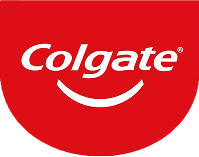
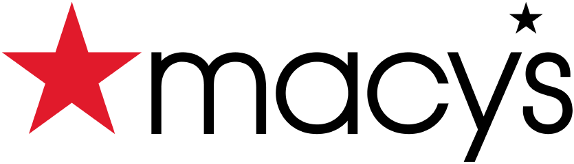

Originally called Best Select, and then Pabst Select, the current name came from the blue ribbons that were tied around the neck of the bottle, a practice that ran from 1882 until 1916. It was discontinued due to a silk shortage during World War I.
The very first logo for the toothpaste was created in 1897 and featured sleek white lettering on a red background. The red and white color palette of the logo was symbolizing power, confidence, and passion. The red background made the white color look even brighter and fresher, evoking a sense of cleanliness and shining.
The DuPont oval became the official corporate trademark in 1909. The proportions and layout of the DuPont oval were mathematically defined and standardized in 1948, when an internal audit revealed that more than 45 variations of the oval were in use within the company.
In the middle of the 20th century, designers removed the address to emphasize the name of the department store chain. The word “Macy’s” was black as before. The four letters after the “M” have become lowercase, and the apostrophe has become a small five pointed star above the “y.” This is the first time the logo would represent the brand we recognize today.
The four parts of the octagon—originally black, brown, green, and blue—represent forward motion, while the white square in the middle suggests progress originates from the center. "Like the bank itself, the symbol is a single unit made up of separate parts," the designers noted. The geometric design was one of the very first abstract corporate logos, sparking a change in marketing and branding.